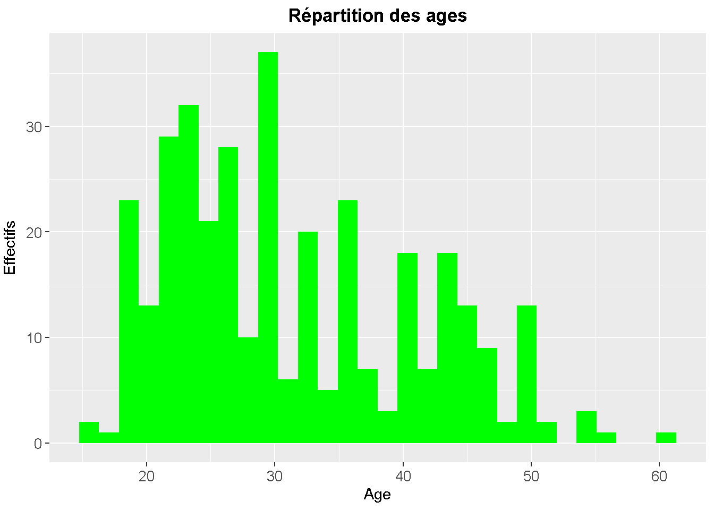
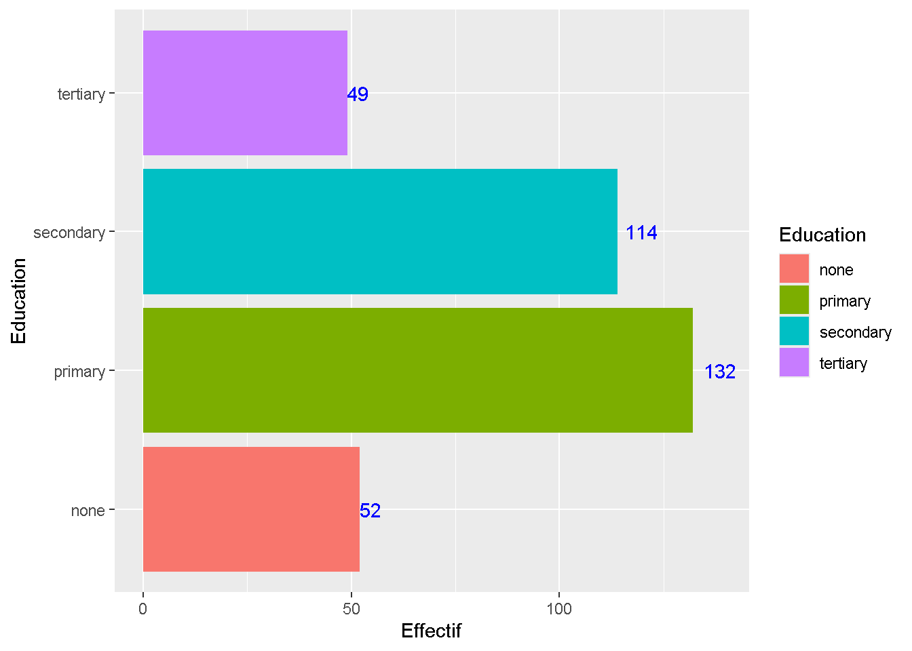
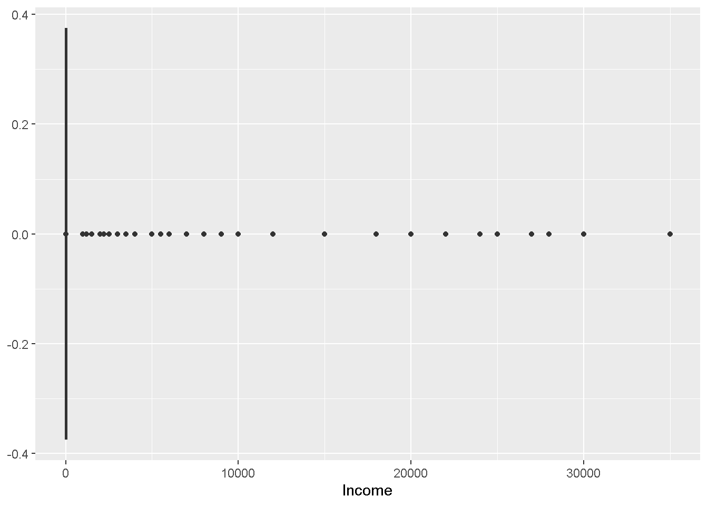
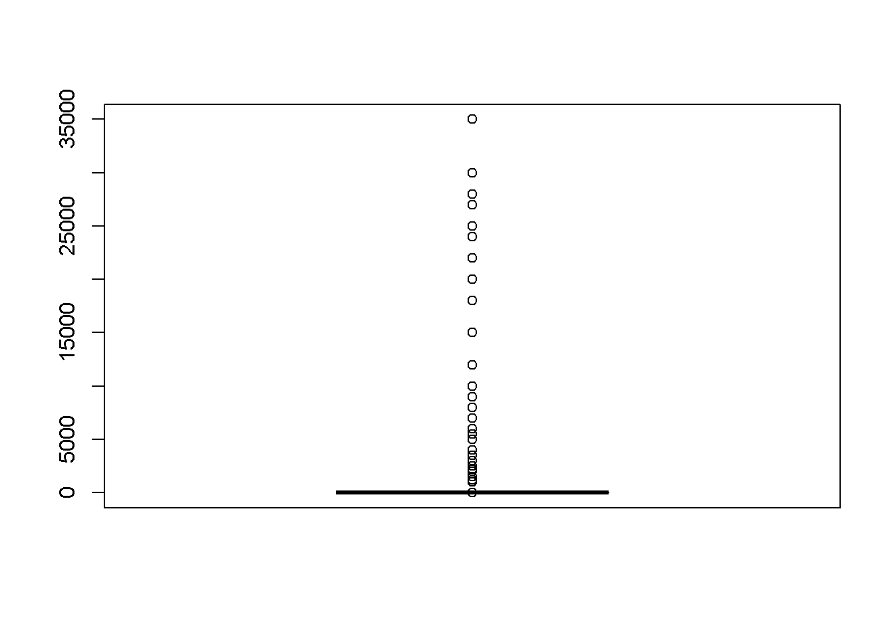
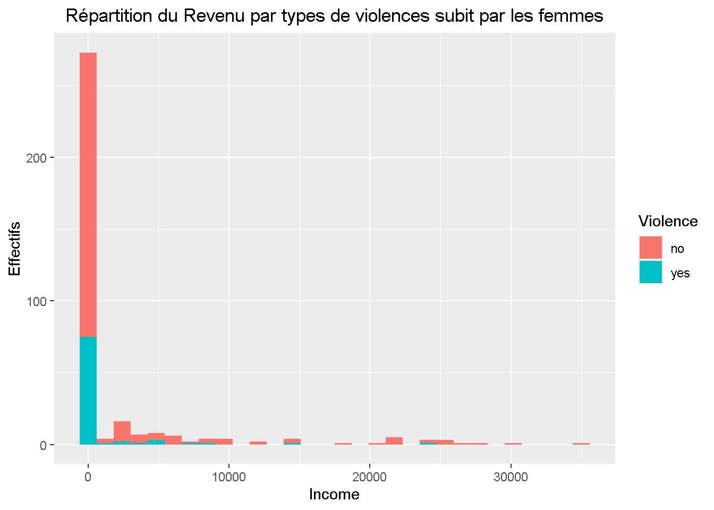
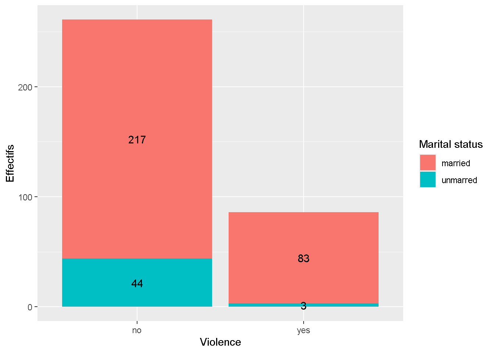

library(ggplot2)
library(tidyverse)
library(knitr)
library(plotly)Untitled
Importation des packages et de la base de données
La base de données renseigne sur les violences faites aux femmes et quelques caracteristiques relatives a ces femmes notamment : le niveau d’education,l’emploie,le statut matrimonial,et la situation de la femmes en terme de violence subit
data<-read_csv('Domestic violence.csv')
kable(head(data))| SL. No | Age | Education | Employment | Income | Marital status | Violence |
|---|---|---|---|---|---|---|
| 1 | 30 | secondary | unemployed | 0 | married | yes |
| 2 | 47 | tertiary | unemployed | 0 | married | no |
| 3 | 24 | tertiary | unemployed | 0 | unmarred | no |
| 4 | 22 | tertiary | unemployed | 0 | unmarred | no |
| 5 | 50 | primary | unemployed | 0 | married | yes |
| 6 | 21 | tertiary | unemployed | 0 | unmarred | yes |
Analyse univarée de la base de données
Répartition des ages
ggplot(data,aes(x=Age)) + geom_histogram(fill="green") + labs(y="Effectifs",title = "Répartition des ages") + theme(plot.title = element_text(hjust = 0.5,face = "bold"),axis.text.x = element_text(size = 10),axis.text.y = element_text(size = 10),axis.title.y=element_text(vjust = 2.5))`stat_bin()` using `bins = 30`. Pick better value with `binwidth`.
On remarque que la plupar des femmes interviewé ont entre 20 et 30 ans.
Répartition du niveau d’étude
data_niv<-data %>% group_by(Education) %>% summarise(Effectif=n())
ggplot(data_niv,aes(x=Education,y=Effectif,fill=Education)) + geom_bar(stat = "identity") + geom_text(aes(label=Effectif),position = position_stack(vjust = 1.05),col="blue") +coord_flip()
La majorite des femmes ont arreté l’ecole entre le primaire et le segondaire.En effet comme le montre le graphiuqe ci-dessus, sur 347 femme 132 femmes ont un niveau d’etude primaire contre 114 au secondaire.
Répartition des revenus des femmes
ggplot(data,aes(x=Income)) + geom_boxplot()
print(length(boxplot(data$Income)$out))
[1] 75On note que la plupart des femmes n’ont pas de revenu. En effet une inspection de la repartition des salaire par femmes revèle que sur les 347 femmes seulement 75 femmes soit 21.61% seulement ont un revenu remarquable de l’ensemble des femmes retenu pour l’etude.
Répartition du status matrimonial
data %>% group_by(`Marital status`) %>% summarise(Effectif=n()) %>%
plot_ly(
labels = ~`Marital status`,
values = ~Effectif,
type = 'pie',
hole=0.4
) %>% layout(
title = "Répartition du status matrimonial",
xaxis = list(showgrid = FALSE, zeroline = FALSE, showticklabels = FALSE),
yaxis = list(showgrid = FALSE, zeroline = FALSE, showticklabels = FALSE),
showlegend = TRUE,
legend = list(
orientation = "h",
x = 0.5,
xanchor = "center",
y = -0.1
)
)86.5% des femmes soit 300 sur 347 sont mariées contre seulement 13.5 qui ne le sont pas.
Répartition des violences faites au femmes
data %>% group_by(Violence) %>% summarise(Effectif=n()) %>%
plot_ly(
labels = ~Violence,
values = ~Effectif,
type = 'pie',
hole=0.4
) %>% layout(
title = "Répartition des violences envers les femmes",
xaxis = list(showgrid = FALSE, zeroline = FALSE, showticklabels = FALSE),
yaxis = list(showgrid = FALSE, zeroline = FALSE, showticklabels = FALSE),
showlegend = TRUE,
legend = list(
orientation = "h",
x = 0.5,
xanchor = "center",
y = -0.1
)
)indépendament de leurs situation matrimonial actuelle 75.2 % des femmes ont déja ete violenté contre 24.8 % qui n’ont pas subit de violence quelcquonque.
Analyse bivariée
Répartition des ages par types de violences subit par les femmes
ggplotly(ggplot(data,aes(x=Age,fill=Violence)) +geom_histogram() + labs(title="Répartition des ages par types de violences subit par les femmes",y="Effectifs") + theme(plot.title = element_text(hjust = 0.5)))le profils des femmes independament du type de violence subit es presque identique.Par ailleurs ont note plus de femmes entre 20 et 30 ans.
ggplot(data,aes(x=Income,fill=Violence)) +geom_histogram() + labs(title="Répartition du Revenu par types de violences subit par les femmes",y="Effectifs") + theme(plot.title = element_text(hjust = 0.5))`stat_bin()` using `bins = 30`. Pick better value with `binwidth`.
a<-data %>% group_by(`Marital status`,Violence) %>% summarise(Effectifs=n())`summarise()` has grouped output by 'Marital status'. You can override using
the `.groups` argument.ggplot(
a ,
aes(x=Violence,y=Effectifs,fill=`Marital status`)
) + geom_bar(stat='identity') +geom_text(aes(label=Effectifs),position = position_stack(vjust = 0.5))
parmis les 261femmes n’ayant pas été victimes de violences,217 etaient marié.Cet situation est presque la meme du coté des femmes ayant été mariée ou sur 86 ,83 etait maries